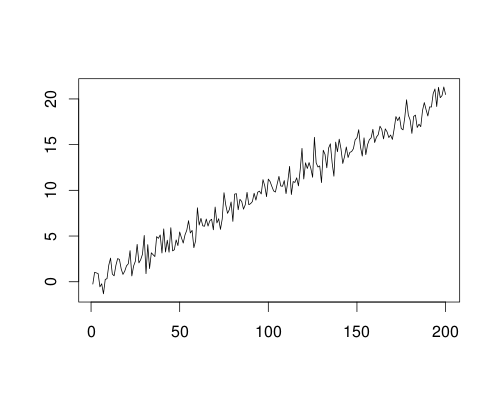

Anomaly Detection
Holt-Winters Forecasting
Exponential smoothing for level, trend, and seasonality.
The Holt-Winters method is the method of triple exponential smoothing. The exponential moving average filter applied three times accounts for level, trend, and seasonality for a given time series.
Simple exponential smoothing
First, we begin with the exponentially weighted moving average. It is defined recursively as follows:
\[ s_t = \alpha x_{t} + (1 - \alpha) s_{t-1} \]$s_t$ is the smoothed time series. The parameter $\alpha$ is the level coefficient.
Question: How can this be expressed in the ARIMA form? See #1.
Double exponential smoothing
Next, we want to modify our model to account for some sort of linear trend.
\[ s_t = \alpha x_{t} + (1 - \alpha) (s_{t-1} + b_{t-1}) \\ b_t = \beta (s_t - s_{t-1}) + (1 - \beta) b_{t-1} \]Note that $b_t$ is essentially the EWMA-smoothed first difference of $s_t$.
Triple exponential smoothing2
Finally, we would like to account for seasonality. The following applies for multiplicative seasonality. The additive version is similar.
\[ s_t = \alpha \frac{x_{t}}{g_{t-L}} + (1 - \alpha) (s_{t-1} + b_{t-1}) \\ b_t = \beta (s_t - s_{t-1}) + (1 - \beta) b_{t-1} \\ g_t = \gamma \frac{x_t}{s_t} + (1 - \gamma) g_{t-L} \]$g_t$ is the seasonal component. $L$ represents the seasonality lag, which depends on the period.
The n-step ahead forecast is:
\[ F_{t+m} = (s_t + m b_t) g_{t-L+m} \]Selection of parameters
If explicit values for the parameters are not given, R will attempt to find values that minimize the SSE.
Cosine time series example
As a simple example, I attempted Holt-Winters forecasting on a simple cosine time series. The HoltWinters function will complain if a frequency is not specified, so I had to wrap the vector in a ts object and specify a frequency.
m <- HoltWinters( ts(cos(c(1:96)), frequency=6), gamma=T)
p <- predict(m, 10, prediction.interval = TRUE)
plot(m, p)

Specifying the correct frequency is very important. If a reasonable value is not chosen or found, the computed forecasts and confidence intervals will not be very accurate.
m <- HoltWinters( ts(cos(c(1:96)), frequency=48), gamma=T)
p <- predict(m, 10, prediction.interval = TRUE)
plot(m, p)
ARIMA
In this example, I simulated points from an ARIMA process and added a linear trend. There is no seasonality.
ts.sim <- arima.sim( list (
order = c(2,0,0)
, ar = c(0.01, 0)
)
, n = 200)
for(i in seq_along(ts.sim)) {
ts.sim[i] = ts.sim[i] + i*0.1;
}
ts.plot(ts.sim, xlab="", ylab="")

The HoltWinters function was used with gamma=F to specify that there is no seasonal component. The forecast generates what we would expect.
m <- HoltWinters(ts.sim, gamma=F) p <- predict(m, 10, prediction.interval = TRUE) plot(m, p)
If we set beta=F as well, the predicted values are equal to the last EWMA value. This is expected because the simple exponential smoothing method assumes a fixed mean.
m <- HoltWinters(ts.sim, gamma=F, beta=F) p <- predict(m, 10, prediction.interval = TRUE) plot(m, p)
Volcano ash example
The following time series represents the volcano dust veil index in the northern hemisphere. Clearly, this time series is not a typical zero-mean stationary series. In particular, the values are all non-negative. The confidence intervals generated using the HoltWinters function is rather high, and cross the x-axis.
volcanodust <- scan( "http://robjhyndman.com/tsdldata/annual/dvi.dat"
, skip=1)
m <- HoltWinters(volcanodust, gamma=F)
p <- predict(m, 20, prediction.interval = TRUE)
plot(m, p, main='Volcano Dust')